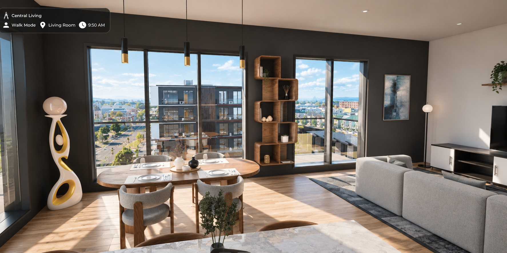

A new apartment block on Manchester Street sells itself on its outlook. We built an independent spec twin so a buyer can stand inside a specific apartment and check that outlook for themselves, before they sign.
The imagination gap
The campaign shows the building well. It does not show the buyer what they will see from inside it.
Like many off-plan launches, the published material leads with an elevated exterior render, floor plans and a set of styled interiors. These tell a buyer what the block looks like from the street. They leave the questions that actually decide a purchase unanswered:
- What do I see from my living room on this level, facing this way?
- Is that view open, or does the neighbouring building fill it?
- Does the bedroom look onto the street, a courtyard, or a wall?

The developer’s team can read a plan and picture the answer. A buyer usually cannot, especially one buying from out of town. So the buyer fills the gap with imagination, and imagination either oversells the view or talks them out of the deposit.
What we built
We built one 1:1 digital twin of the block, set in the surrounding streets and buildings of central Christchurch. The same model carries the buyer from the aerial overview, down to the facade, and into a single apartment.
Once inside, the buyer is not looking at a picture of a view. They walk to the window and look out from the height and orientation of that apartment. The neighbouring rooftops, the street below and the distance to the next building sit where they will sit.
That turns a sales promise into something the buyer checks for themselves. Every view in this project comes from the same model, so the living room, the bedroom and the aerial agree with each other.
This spec twin was built from publicly available material, so we present it as illustrative. On a commissioned project we build from the developer’s own BIM or CAD data, which makes every view traceable back to the design.
Why it matters
When the buyer can verify the view, the view stops being an objection and becomes the reason to buy.
- For buyers: confidence to commit off-plan, including from another city or country, without guessing what the window frames.
- For the sales team: a direct answer to “which apartment gets the better outlook?”, shown unit against unit rather than argued.
- For the developer: one twin, every use. The same model produces the sales walkthrough, VR sessions, campaign film and stills, and the context views that help neighbours and council understand a proposal on a city block.
In a rebuilt central city where new blocks keep rising next to each other, the outlook from a given window is a real part of what is being sold. It deserves to be shown, not described.